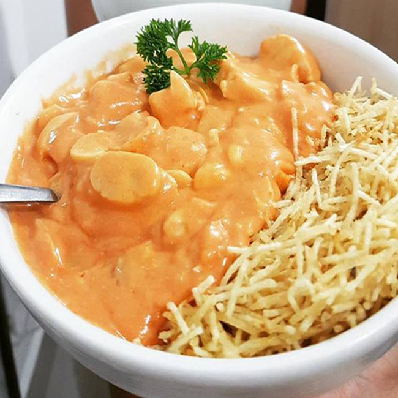

Strogonoff de Frango
delicioso
Ingredientes
- 1 Kg de peito de frango sem pele
- 1 tablete de caldo de galinha
- 3 colheres(sopa) de óleo
- 2 latas de creme de leite sem soro
- 2 colheres (sopa) de molho de tomate
- 2 colheres (sopa) de mostarda
- 2 colheres (sopa) de ketchup
- Batata palha e arroz branco para acompanhar
- champignon
Modo de preparo
- Em uma panela a fogo médio acrescente o óleo e o caldo de galinha e,
dissolva o caldo. Logo em seguida coloque o frango picado em cubos
na panela e deixe cozinhar, sempre dando uma olhadinha para não queimar.
- Assim que o frango estiver bem cozido, acrescente o molho de
tomate, o ketchup, a mostarda e champignon a gosto
- Abaixe o fogo e coloque o creme de leite e mexa bem até se tornar
um creme homogêneo.
- Está pronto para servir.
